서버비 0원, 무료 한도의 7%
댓글로 서버 비용이 얼마나 드냐는 질문을 받았고, 답은 0원이에요. 실제 콘솔 화면에서 오른쪽 위 '프로젝트 비용' 칸이 $0.00으로 찍혀 있어요.
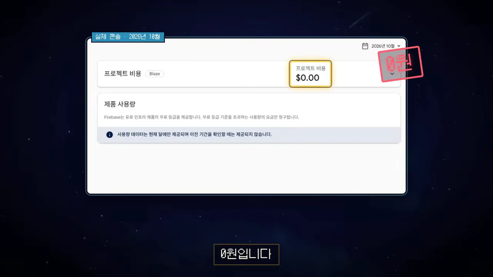
한 달만 그런 게 아니에요. 출시한 8월, 9월, 10월 카드 세 장이 모두 $0.00이에요.
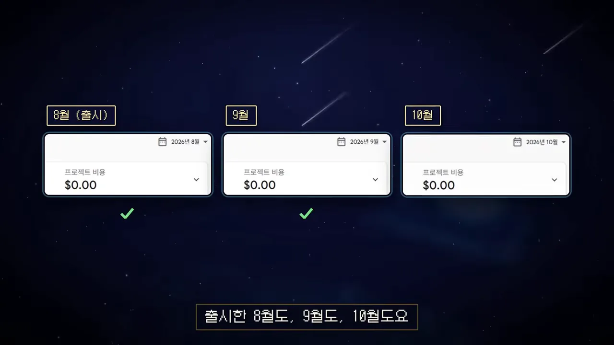
하루 1천 명에 무료 한도의 7%
게임은 하루 1천 명쯤 플레이해요. 왼쪽 콘솔에서 지난 30일 '다운로드'가 750.08MB로 찍혔고, 오른쪽 막대는 그게 무료 한도 10GB/월 중 7%라는 걸 보여 줘요. 스토리지는 1.94MB밖에 안 돼요.
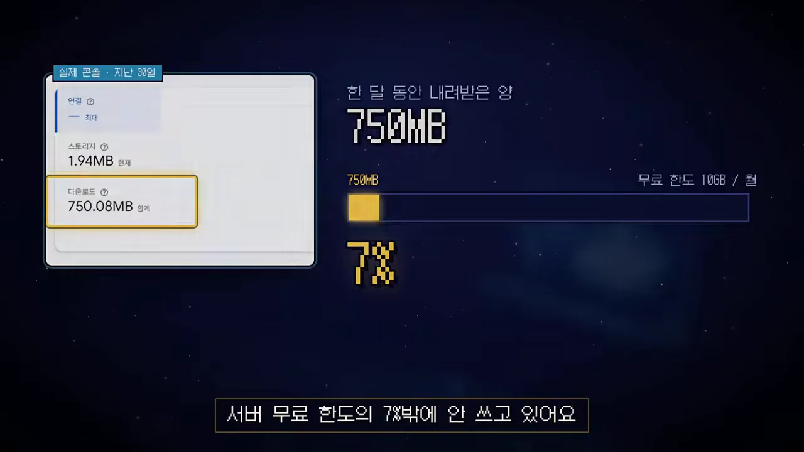
다음 슬라이드는 이 비율을 사람 수로 바꿔 보여 줘요. 칸 하나가 하루 1천 명이고, 지금은 맨 왼쪽 노란 칸 하나(7%)만 쓰고 있어요. 지금처럼 쓰면 하루 1만 명이 들어와도 무료 한도 안이라는 계산이에요.
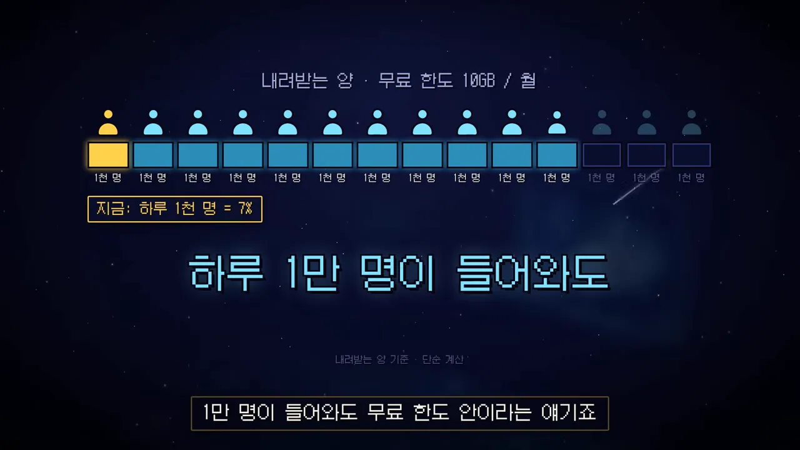
결과만 보내기
어떻게 가능했냐면, 처음부터 서버가 할 일을 거의 없게 설계했어요. 왼쪽 폰 화면에 '게임은 전부 폰에서', 오른쪽 서버 아래에 '할 일 거의 없음'이라고 적혀 있어요. 서버 그림 위에 Z 표시가 떠 있는 것도 그래서예요.
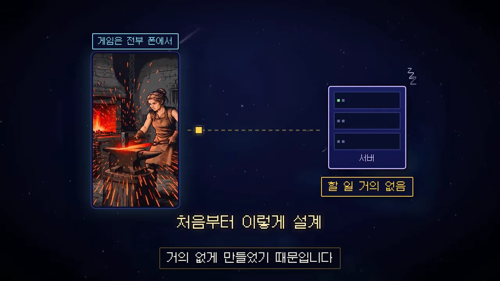
망치질, 원정, 성장 같은 게임 진행은 전부 폰에서 계산하고 서버는 그 과정을 몰라요. 서버로 가는 건 랭킹에 올릴 결과 한 줄뿐이에요.
단서가 하나 붙어요. 이건 혼자 하는 방치형 게임이라 되는 구조예요. 오른쪽 상자의 실시간 대전, 채팅, 서버에 세이브를 올리는 게임은 서버가 계속 일해야 해서 '구조부터 다름' 도장이 찍혀 있어요.
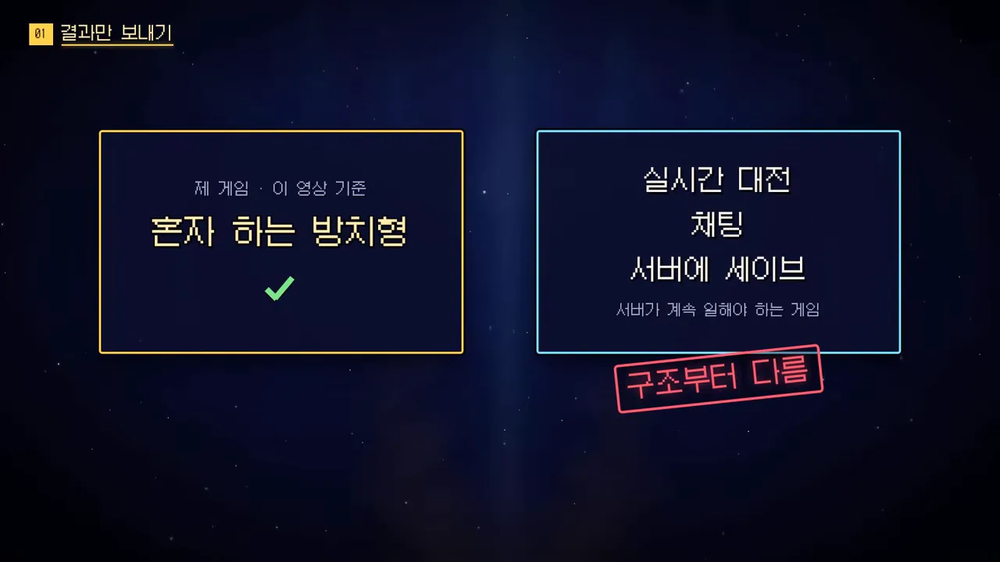
접속 총량을 어떻게 줄였나요?
두 번째 방법은 서버에 접속하는 횟수 자체를 줄이는 거예요. 이유는 화면의 막대 두 개에 있어요. 접속할 때마다 드는 보안 연결이 약 3,500바이트인데, 정작 보내는 랭킹 기록 한 줄은 약 50바이트라 가는 노란 선 하나예요. 연결 비용이 내용의 70배쯤 돼요.
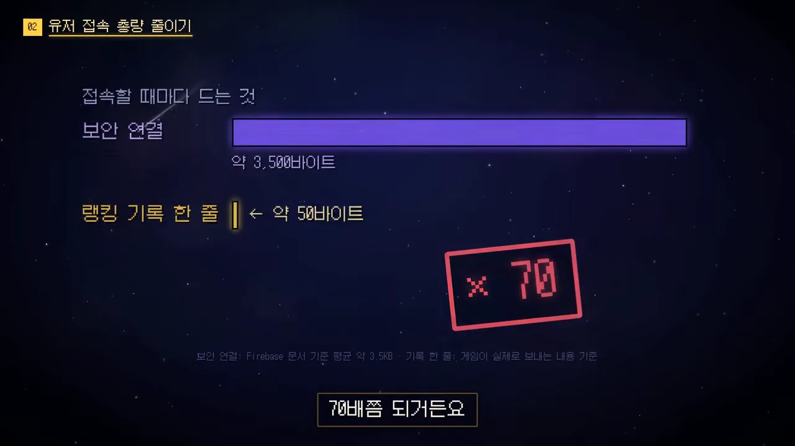
보내는 횟수 줄이기
예전에는 원정이 끝날 때마다 랭킹 4곳에 기록을 보냈어요. 원정이 1시간에 30~50번이니 1시간에 120~200번 전송이었죠. 화면은 이 계산에 빨간 줄을 긋고, 아래 '랭킹 화면 열기' 버튼 옆에 '이때만 전송'이라고 적어요.
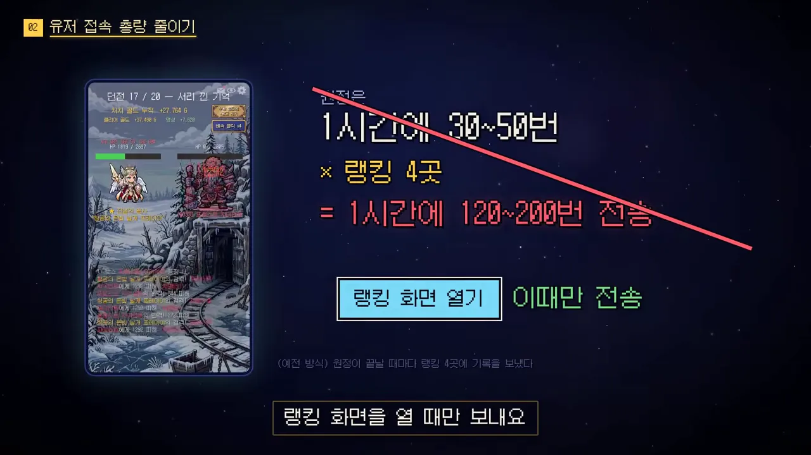
랭킹 화면을 열었을 때도 조건이 두 개 더 붙어요. 기록이 안 바뀌었으면 보내지 않고, 자주 바뀌는 기록도 1시간에 한 번만 보내요. 이름 바꾸기는 하루 한 번으로 묶었어요.
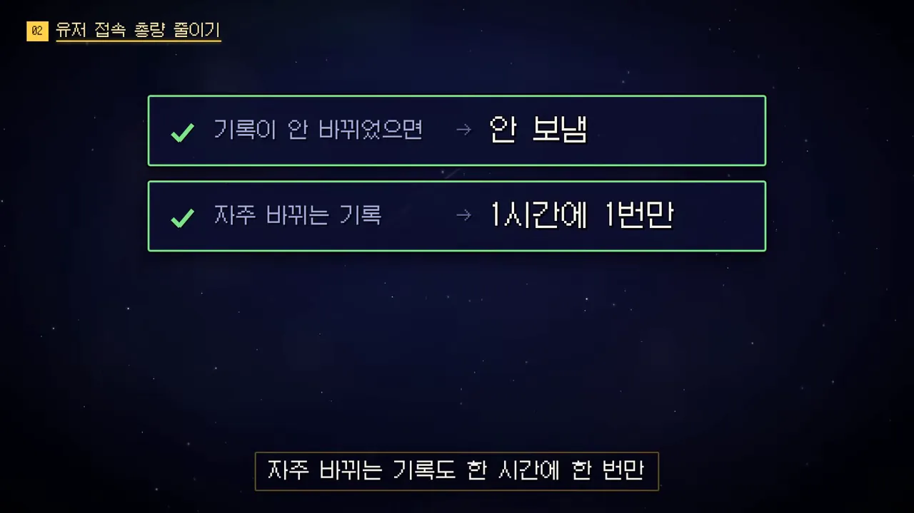
받는 횟수 줄이기
받는 쪽도 같은 원칙이에요. 1시간에 한 번만 받고, 그 사이엔 받아 둔 걸 보여 줘요. 랭킹은 상위 100명, 공지는 최근 10개만 받아요.
| 받는 것 | 얼마나 | 얼마나 자주 |
|---|---|---|
| 랭킹 | 상위 100명 | 1시간에 1번, 그 사이엔 받아 둔 것 |
| 공지 | 최근 10개 | 1시간에 1번 |
| 역대 랭킹(주간 1위) | 새로 생긴 1위만 | 일주일에 1번 |
까다로운 건 역대 랭킹이에요. 주간 랭킹 1위는 역대 랭킹에 영원히 올라가요. 오른쪽 목록이 1대부터 12대까지 길어지는 동안, 왼쪽 빨간 막대 '앱 켤 때마다 전부 다시 받으면'도 같이 길어져요. 1년이면 52명이 쌓여요.
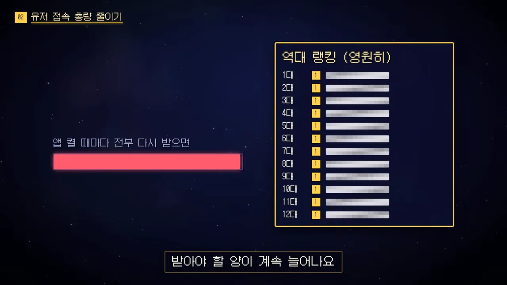
그래서 한 번 받은 1위는 폰에 저장해 둬요. 52칸 중 초록 체크가 붙은 칸이 이미 폰에 있는 1위들이고, 노란 칸 하나가 새로 생긴 1위예요. 이 한 칸만 일주일에 한 번 받아요.
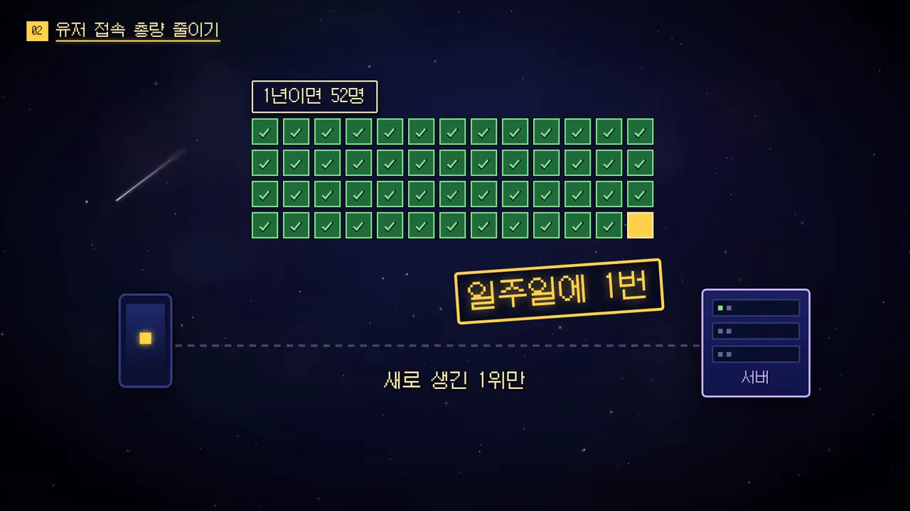
여러 슬라이드에 걸친 규칙을 한 장에 모으면 이래요.
해킹 기록 거르기와 요금 폭탄 대비
세 번째는 조작된 기록을 거르는 일이에요. 보통은 검사용 서버를 따로 돌리거나 해킹 방지 툴을 붙이는데, 둘 다 그만큼 돈이 들어요. 이 게임은 Firebase에 원래 있는 보안 규칙을 썼어요.
화면은 보안 규칙을 데이터베이스 앞에 선 문지기로 그려요. '옛날 버전에서 온 기록'이 문 사이에서 막혀 오른쪽 데이터베이스로 못 들어가요. 옛날 버전 기록이나 말이 안 되는 숫자는 받지 말라고 규칙에 적어 두면 자동으로 막아 줘요.
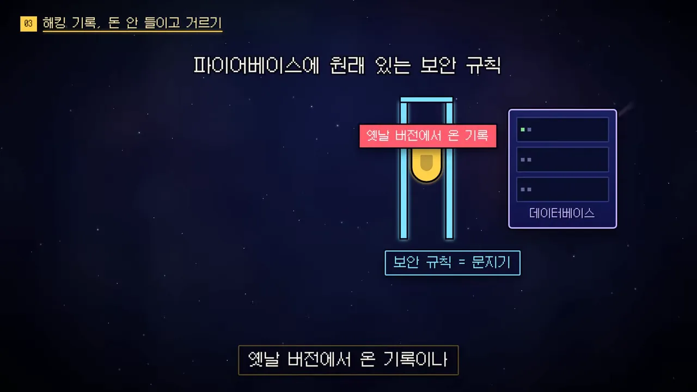
실제 콘솔의 보안 규칙 통계를 보면 지난 30일 동안 허용 21만 번, 거부 3.2천 번, 오류 5번이에요. 파란 선이 허용, 바닥에 붙은 주황 선이 거부예요. 10월 15일쯤 허용이 3만 번 넘게 튄 날이 하루 있어요. 영상은 이 튐을 따로 설명하지 않아요.
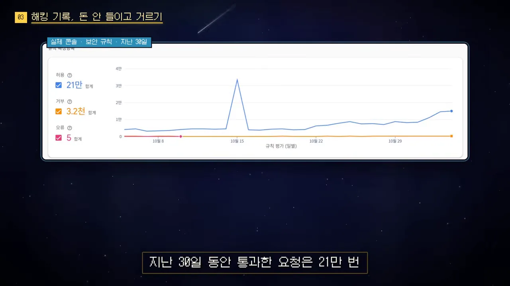
물론 규칙이 다 잡지는 못해요. 그래서 하루에 한두 번은 직접 기록을 확인해요. 규칙도 직접 확인도 돈은 안 들고, 개발자 시간이 조금 들 뿐이에요. 이 게임의 해킹 버전이 해외 포럼에 올라온 적도 있는데, 그 대응은 따로 영상으로 다룬다고 해요.
요금 폭탄에는 예산 알림
누군가 요청을 쏟아붓는 공격으로 서버비 폭탄을 맞을까 걱정된다면, 예산을 정해 두고 알림을 꼭 걸어 두라고 해요. 화면 왼쪽은 실제 '사용량 및 결제' 화면이고, 오른쪽에 '저도 걸어 둠 · 예산 1개', '알림만 올 뿐'이라고 적혀 있어요. 알림이 와도 서비스가 멈추지는 않지만 바로 알 수는 있어요.
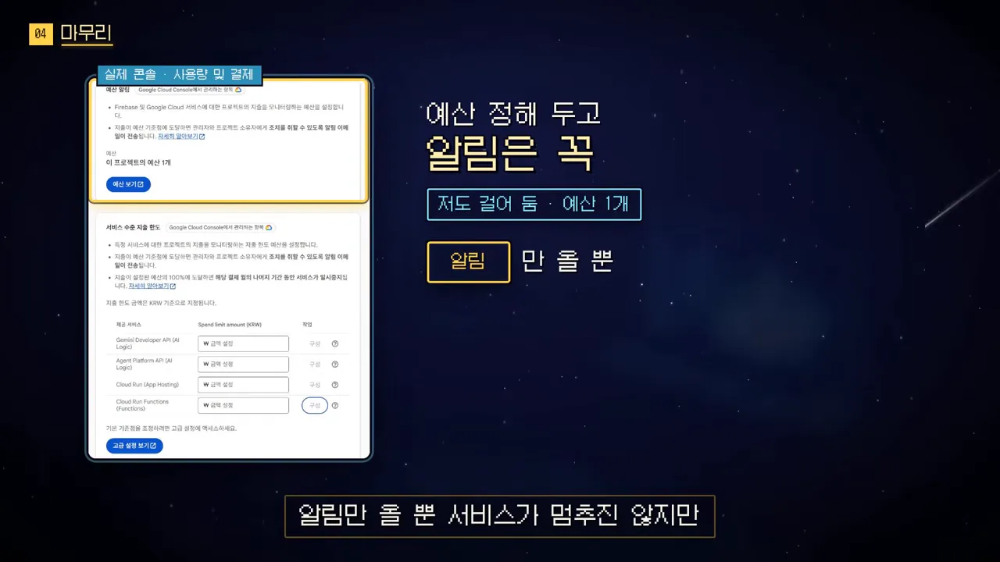
정리: 서버를 적게 쓰게 만들기
'전설의 대장간 후예'가 서버비를 아낀 방법은 체크 표시가 붙은 세 줄이에요. 결과만 보내고, 접속 총량을 줄이고, 해킹 기록은 돈 안 들이고 걸러요.
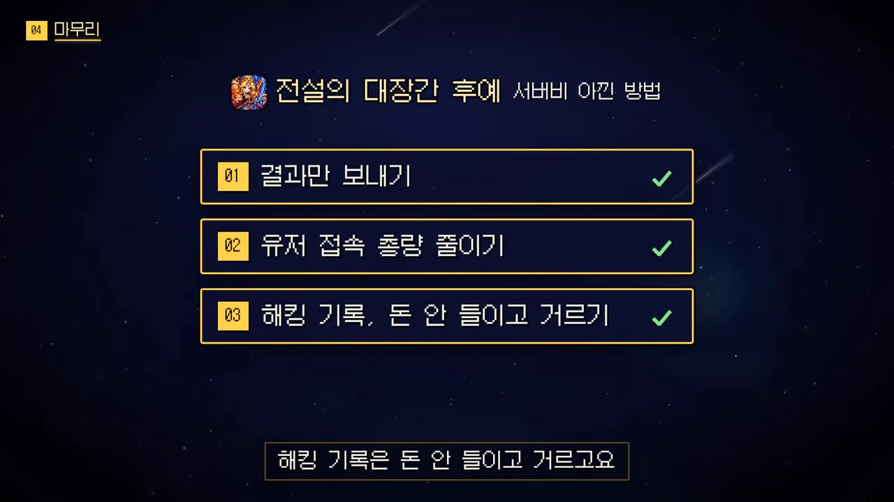
서버를 싸게 쓴게 아니라 처음부터 적게 쓰게 만든 거예요.
— 영상 02:50
Firebase 기록을 분석하다 광고 수익에서 꽤 큰 문제도 찾았는데, 실제 숫자는 다음 영상에서 보여 준다고 해요.
마지막 권유는 첫 게임이라면 서버가 할 일이 적은 게임부터 만들어 보라는 거예요. 왼쪽 '혼자 하는 방치형' 상자에 불이 들어와 있고, 오른쪽 실시간 대전·채팅·서버 세이브 상자는 흐리게 꺼져 있어요. 설계할 때 신경 쓸 게 좀 있지만 서버비 걱정 하나는 확실히 덜 수 있다고 해요.
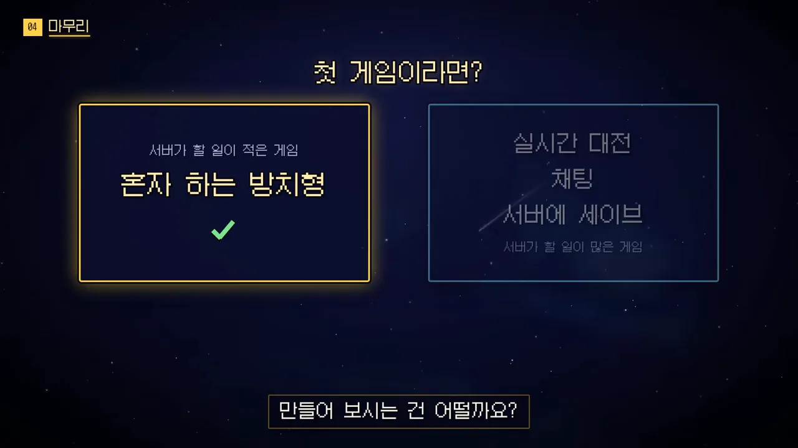